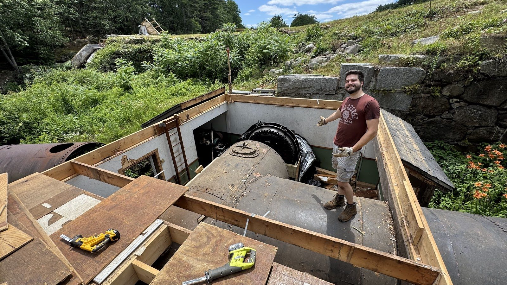
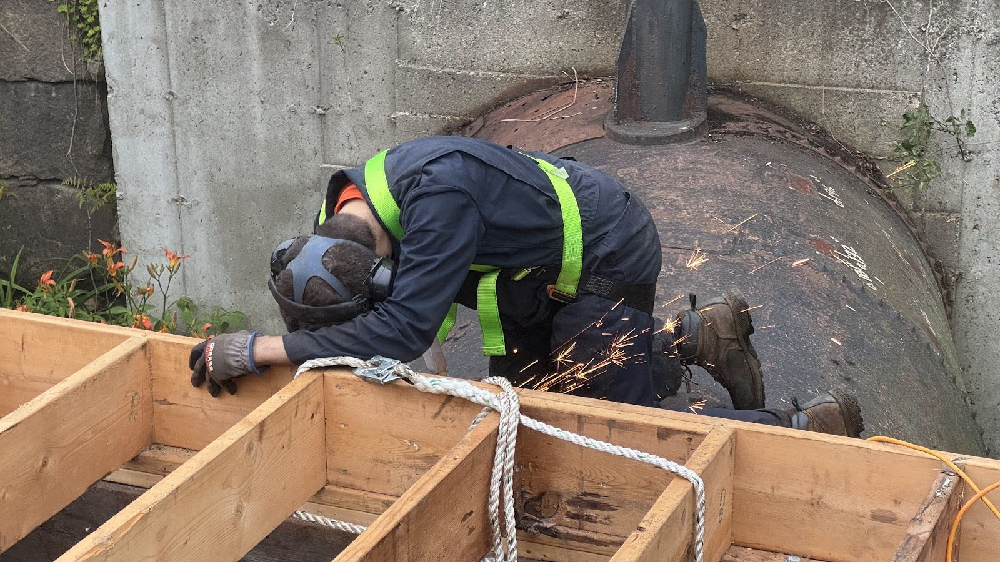
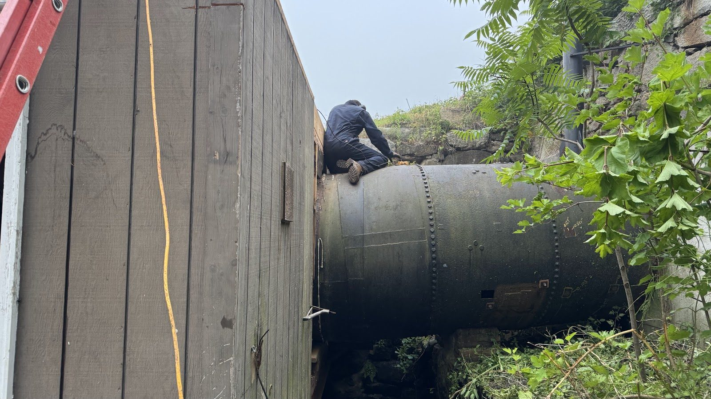
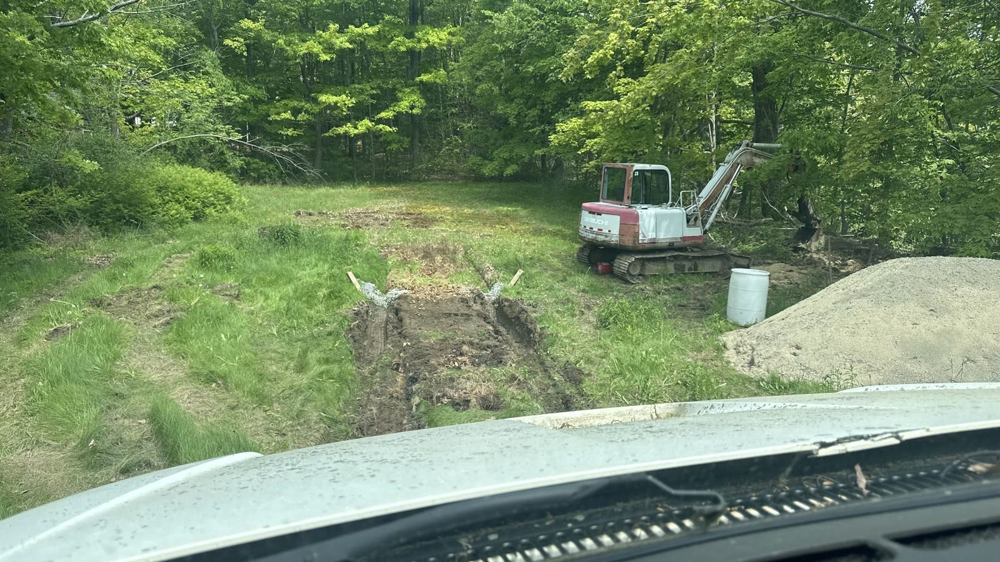
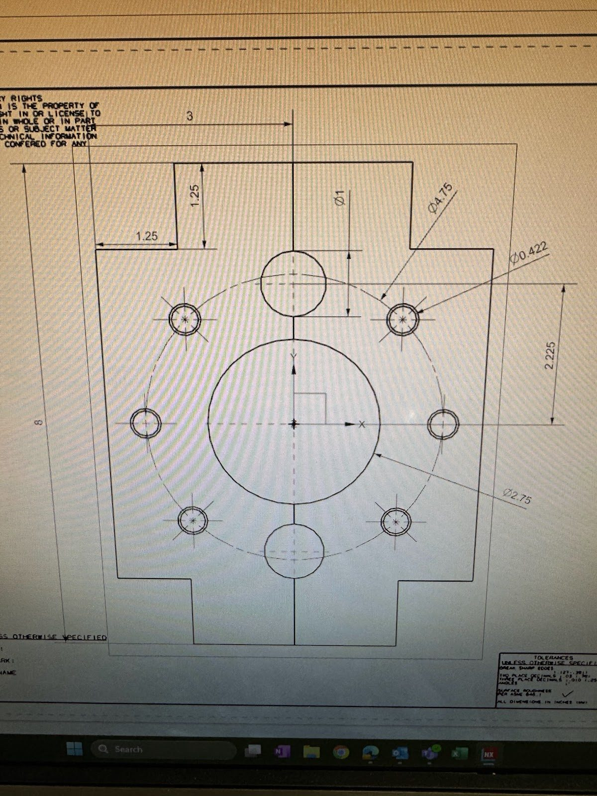
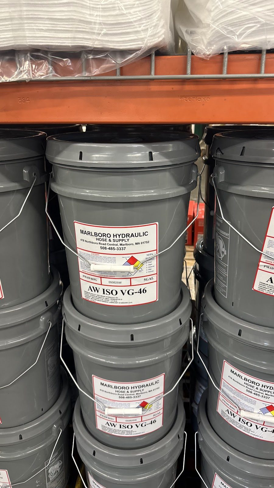
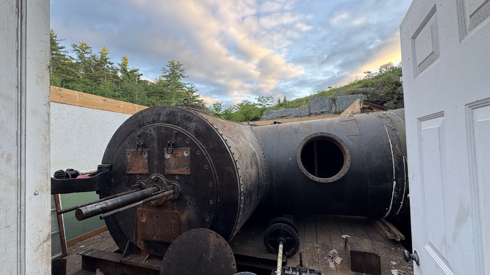

Foundations for the New Generator House

With the old building down, the new generator house is rising from the ground up — literally.
The foundation work this spring has two distinct personalities. On the land side, it's conventional: footings, forms, and concrete. Over the water, it's anything but: structural steel spanning the old tailrace channels, engineered to carry a generator and gearbox above moving water on a footprint constrained by 150-year-old stonework.






That stonework is the best part of this phase. The historic fieldstone walls we preserved during disassembly are being tied directly into the new structure. Where a new footing meets an old wall, the granite stays — cleaned, repointed where needed, and doing structural work again after a century and a half. The new building will literally stand on the shoulders of the old mill.
We've also been doing placement mockups for the major equipment — confirming that the gearbox and generator positions line up with the turbine centerline below, that shaft alignment is achievable, and that everything can be lifted in and out for future maintenance without disassembling the building. It's the kind of unglamorous checking that saves you from very expensive surprises on crane day.
And speaking of crane day: it's coming. This summer holds the biggest single operation of the entire project — a second drawdown, a coffer dam, and the swap of the old machinery for the new. The last year of preparation has all been aimed at what happens next.